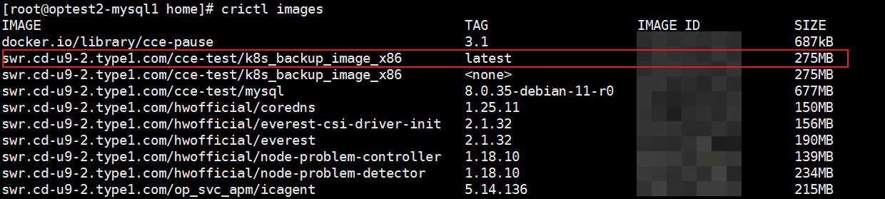

Before uploading the Kubernetes installation package, download the OceanProtect_DataProtect_X.X.X_K8s_BackupImage.tgz installation package based on the version and patch number. Decompress the installation package to obtain the compressed package k8s_backup_image_x86.tar or k8s_backup_image_arm64.tar of the corresponding product architecture. You can obtain the Kubernetes installation package by using the following methods:
The tenant of each Cloud Container Engine (CCE) cluster that needs to use the backup or restoration function needs to perform the following steps to upload and update the image package.
